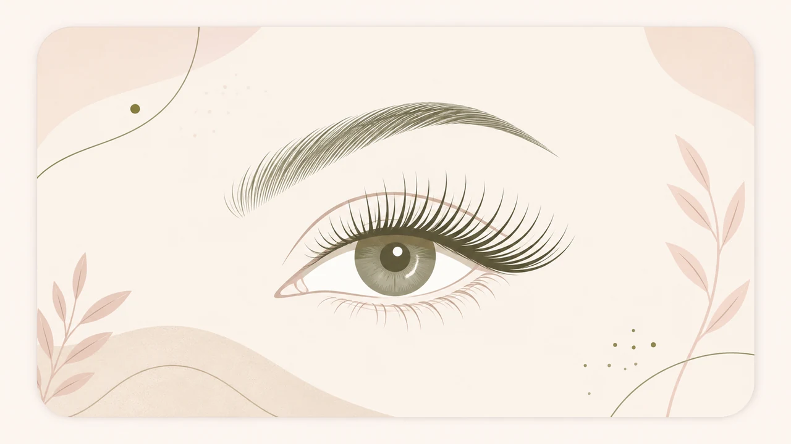
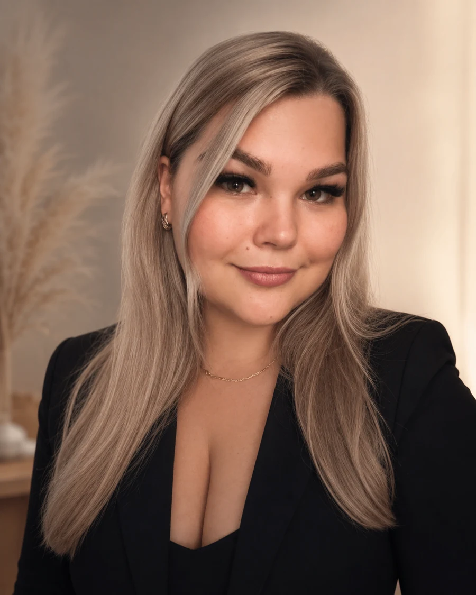
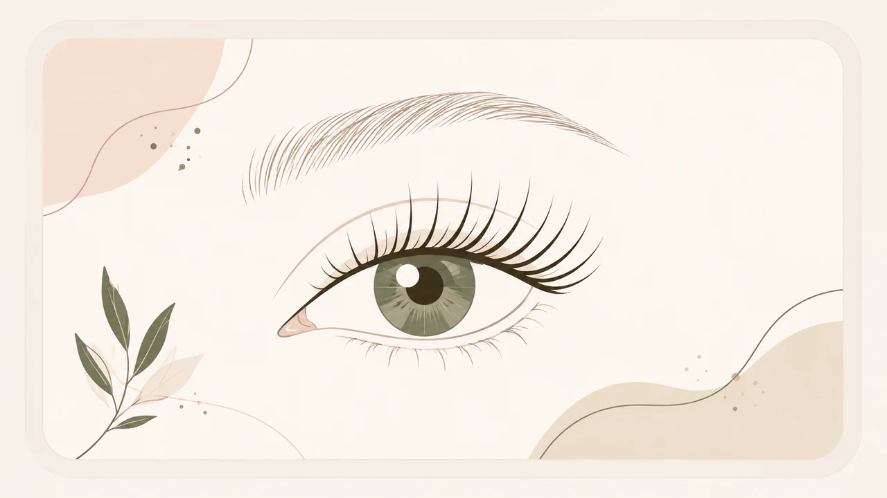
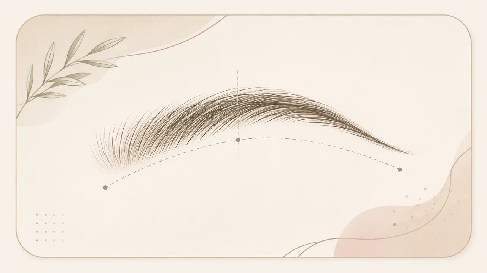

Наращивание ресниц
От классики до выразительного объёма. 1D, 1,5D, 2D, 3D, «Лиса», «Белка», «Голливуд», «Корона» и естественный эффект.
от 1 400 ₽от 2 ч 30 мин
Смотреть ценыПерсональный мастер · Дмитров
Естественный результат, аккуратная работа и индивидуальный подбор.

Услуги

От классики до выразительного объёма. 1D, 1,5D, 2D, 3D, «Лиса», «Белка», «Голливуд», «Корона» и естественный эффект.

Работа с натуральными ресницами: изгиб, уход и окрашивание по выбранному составу услуги.

Форма, коррекция, окрашивание и ламинирование с учётом черт лица и пожеланий.
Коррекция и профессиональное снятие наращённых ресниц также доступны по записи.
Портфолио
Прайс
Понятная стоимость без скрытых доплат. Итоговая цена согласовывается до записи.
«Лиса», «Белка» и «Корона» входят в стоимость объёма. Цена голливудского эффекта определяется после выбора сложности.
Стоимость и состав услуги подтверждаются до записи. Выезд рассчитывается отдельно.
О мастере
Меня зовут Валентина. Я занимаюсь оформлением бровей и ресниц в Дмитрове. Подбираю форму, оттенок, объём и эффект индивидуально, с учётом внешности и пожеланий клиента. Для меня важно, чтобы результат выглядел аккуратно и гармонично, а стоимость и условия процедуры были понятны до записи.
Нажмите, чтобы рассмотреть документ
FAQ
В 1D на одну натуральную ресницу крепится одна искусственная. В 2D и 3D используются лёгкие пучки из двух или трёх ресниц, поэтому объём выглядит выразительнее.
Мастер учитывает форму глаз, направление натуральных ресниц и желаемую выразительность. Вариант согласовывается до процедуры.
От 30 минут для отдельных услуг до 4 часов для сложного наращивания. Ориентировочное время указано рядом с позициями в прайсе.
Срок индивидуален и зависит от цикла обновления волосков, домашнего ухода и выбранной процедуры.
Да. По Дмитрову — 300 ₽, до 15 км — 500 ₽, 15–30 км — 800 ₽, далее по согласованию. Минимальная стоимость услуг для выезда — 1 500 ₽ без учёта дороги.
Позвоните или подготовьте заявку на сайте, а затем отправьте её Валентине по SMS, Telegram или MAX на рабочий номер.
Контакты и выезд
Ежедневно 09:00–21:00 · по предварительной записи
Приём в городе Дмитрове. Точный адрес направляется после подтверждения записи.
Минимальная стоимость услуг для выезда — 1 500 ₽ без учёта дороги.